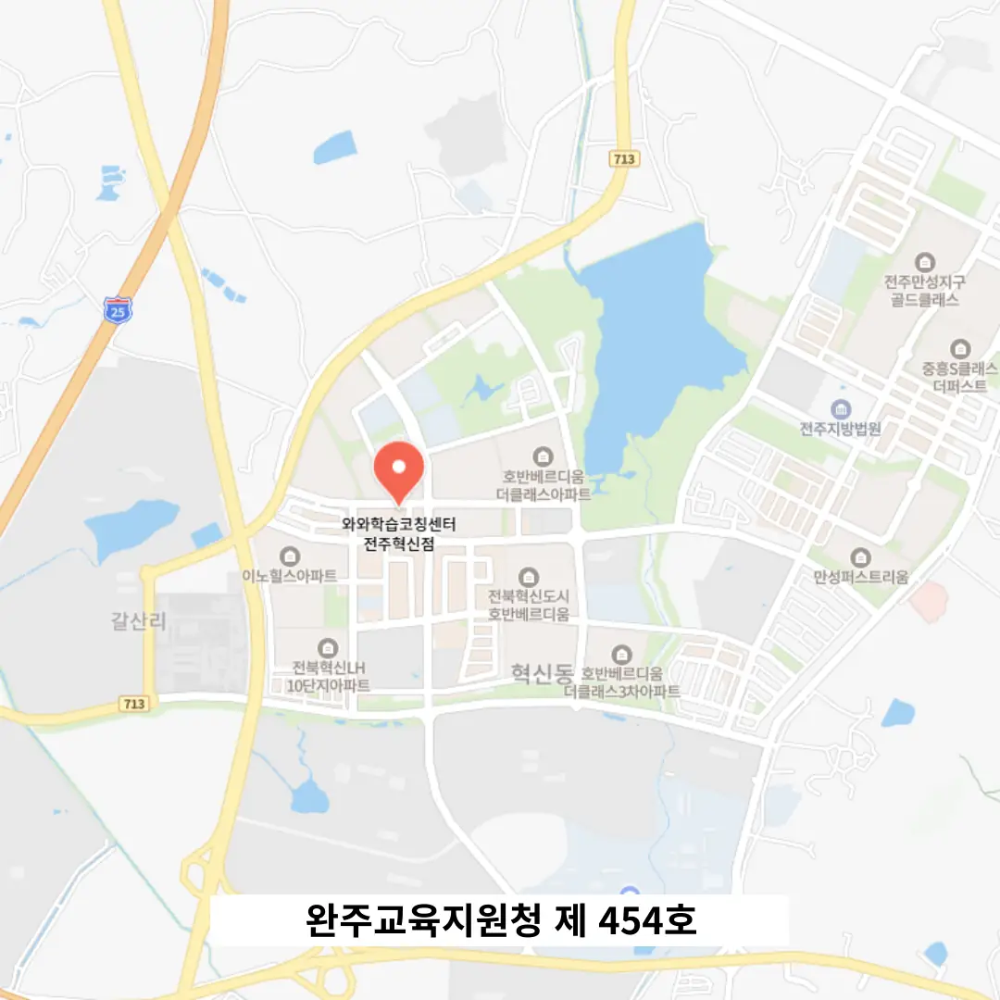

혁신동 와와센터
혁신동 와와센터
기존 습관을 분석해 그 위에 새로운 학습 계획 구축하기를 통해 학습 Ability를 향상시킬 수 있으며, 스트레칭시간 포함운영을 통해 학습者の 피로를 줄이고, 노트 정리 후 교차 피드백을 통해 학습 내용을 재차 확인하며 학습 能力を 높일 수 있습니다. 혁신동 와와센터은 국어 영역에서는 학생이 작성한 논리적 글쓰기 과제를 분석하여, 주장 전개의 비약, 근거의 부족, 문장 간의 연결 약점 등을 구체적으로 짚어주며 문장 구성력을 단계적으로 훈련합니다. 혁신동 와와센터은 실수 후 ‘내가 어떤 부분을 간과했는가’를 정리하는 과정은 자신을 있는 그대로 바라보는 겸손함과 성장 가능성에 대한 믿음을 동시에 키운다. 이러한 과정에서 피드백은 구체적이고 실시간으로 제공되어, 학생이 자신의 진보를 눈으로 확인하며 지속적인 동기 부여를 얻는다. 말로 표현하는 순간 뇌는 자신이 알고 있다고 생각했던 내용의 허점을 직접 마주하게 되며, 이는 자기 인식의 정교함을 높인다. 이 모든 요소들을 통합하여 목표 집중력을 강화하는 것이 궁극적인 목표인데, 이는 단순히 성적 상승을 넘어, 아이가 자기 삶의 방향성을 스스로 설정하고 조정할 수 있는 기반을 마련해 주는 일이다. 사방이 방음재로 꼼꼼히 마감된 조용한 공간에서 이러한 탐색을 할 수 있다면 외부 요인에 흔들리지 않고 집중된 사고가 가능해진다.